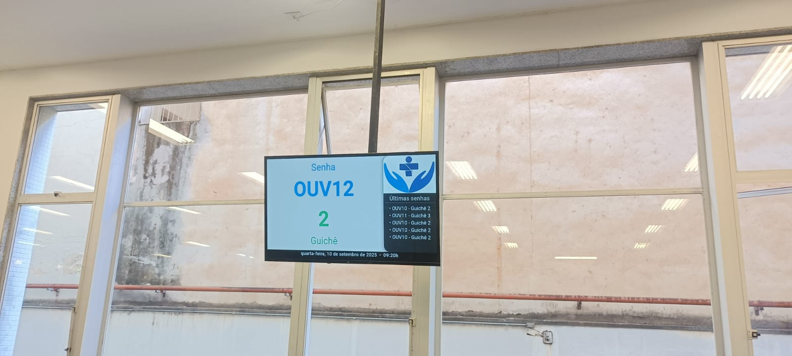

Automação Comercial & Saúde

Sistema de Gestão de Filas
Solução completa para organização de atendimento ao público com emissão de senhas em totens/impressoras térmicas, módulo do atendente (Guichê), painel dinâmico em TV com sintetizador de voz e relatórios estatísticos.
Controle de até 5 filas simultâneas e senhas preferenciais
PainelDesk multimídia com alerta sonoro e chamada por voz
Comunicação distribuída via rede local TCP/IP